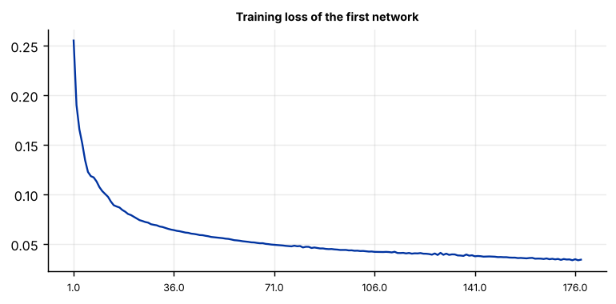
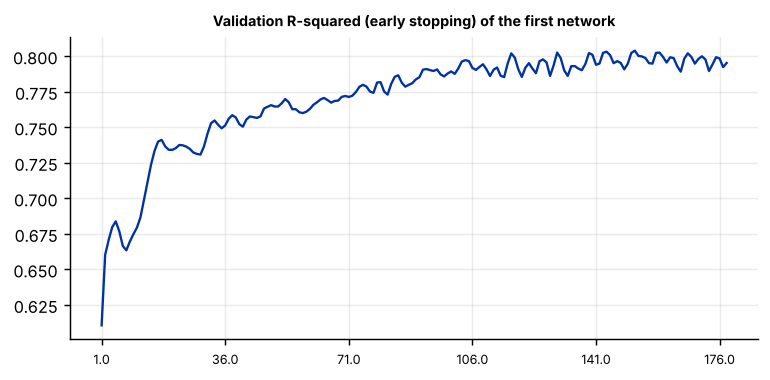

Run this model on your own data in Open Econometric Systems →
Step 1The question and the method
Does a neural network predict better than a linear model or a forest, and by how much? A multilayer perceptron with one or two hidden layers of ReLU units fits
by minimising the squared error plus an L2 penalty \(\alpha\lVert\theta\rVert^2\) with the Adam optimiser. Four choices decide whether the result can be trusted:
- Standardise the inputs and the outcome, otherwise the optimiser is dominated by the variables with large scales.
- Choose the size and penalty by cross-validation on the training sample, not by looking at the test set.
- Stop early: hold back 15% of the training sample and stop when its \(R^2\) has not improved for 25 epochs, which limits overfitting without choosing the number of epochs by hand.
- Average over random starts: training is not convex, so different seeds reach different solutions. The mean of \(S\) networks has a lower test error than the average single network (by convexity of the squared error) and removes most of the seed noise.
Three cautions before you report a neural network
- Report the spread across seeds of a single network, or use an ensemble. One run is not a result.
- Small data favour simple models. With a few hundred observations, a forest or a regularised linear model is often as good, and a network has no coefficients to read.
- A network predicts; it does not explain. Use importance and partial-dependence tools to describe it, and do not interpret the weights.
How to write it: the model
We predict the log median house price in 506 census tracts from eight characteristics: log nitrogen oxide concentration, average number of rooms, distance to employment centres, access to radial highways, the property tax rate, the pupil-teacher ratio, the share of lower-status residents and the log crime rate. The network has ReLU hidden layers, is trained with Adam on standardised data, and stops when the R-squared on 15% of the training sample has not improved for 25 epochs. The architecture ((16) or (32, 16) units) and the L2 penalty (0.01 or 1) are chosen by three-fold cross-validation on the 75% training sample, and the reported prediction is the average of five networks started from different seeds. We compare it on the 25% test sample with OLS and a random forest.
Step 2Load the data
import numpy as np
import pandas as pd
import oes_engine as oes # pip install -e open-econometric-systems/oes-engine
data = open("hprice2.csv").read()
df = pd.read_csv("hprice2.csv")
xs = [c for c in df.columns if c != "lprice"]
print(len(df), "tracts;", len(xs), "predictors")
print(df.corr().round(2).lprice.drop("lprice").sort_values().to_dict())506 tracts; 8 predictors
{'lowstat': -0.79, 'lcrime': -0.6, 'proptax': -0.56, 'lnox': -0.51, 'stratio': -0.5, 'radial': -0.48, 'dist': 0.34, 'rooms': 0.63}How to read it
The log price has a standard deviation of 0.41. The strongest single correlates are the share of lower-status residents (-0.79), the number of rooms (0.63), the crime rate (-0.60) and the property tax rate (-0.56). A linear model will find these linear relations; a flexible model can gain if the relations are curved or interact, which the comparison below shows.
Step 3Fit the network
spec = dict(y="lprice", x=xs, test_share=0.25, seeds=5)
r = oes.run("nnet", data, spec)
oes.summary(r)
oes.show(r, "Architecture")
oes.show(r, "Out-of-sample")Observations: 506
Predictors: 8
Architecture: (32, 16)
Penalty alpha: 0.01
Epochs (first network): 178
Test RMSE, ensemble: 0.1382
Test R-squared, ensemble: 0.8839
Test RMSE, OLS: 0.1797
Architecture and penalty chosen by 3-fold cross-validation (training sample)
L2 penalty (alpha) CV RMSE Chosen
Hidden layers
(16) 0.01 0.1962
(16) 1.00 0.2067
(32, 16) 0.01 0.1889 yes
(32, 16) 1.00 0.2050
Note: ReLU units, Adam optimiser, 15% of each training sample held back for early stopping (patience 25 epochs). Inputs and the outcome are standardised.
Out-of-sample accuracy
Test RMSE Test R-squared
Model
Neural network, ensemble of 5 0.1382 0.8839
Neural network, single (mean over the seeds) 0.1527 0.8576
Neural network, single (worst and best seed) 0.1667 / 0.1413
OLS 0.1797 0.8037
Random forest 0.1348 0.8894
Note: Test set: a random 25% (126 observations). The spread across seeds is the instability of a single network; the ensemble averages it away.How to read it
Cross-validation chooses two hidden layers of 32 and 16 units with the small penalty (alpha = 0.01), with a cross-validated RMSE of 0.189, against 0.196 for one layer of 16 units and 0.205 to 0.207 with the large penalty: the penalty of 1 is too strong for this sample. On the test sample, the ensemble of five networks has an RMSE of 0.138 (R-squared 0.884), against 0.180 (0.804) for OLS, a reduction of 23% in the error. The random forest has 0.135 (0.889), as good as the network. A single network has a mean RMSE of 0.153 and a range of 0.141 to 0.167 across the five seeds, so a single run is between 2% and 21% worse than the ensemble depending on the seed.
Step 4Training and stopping
oes.plot(r, "Training loss", ncols=1, size=(6, 3))
oes.plot(r, "Validation R-squared", ncols=1, size=(6, 3))

How to read it
The first network trained for 178 epochs. The training loss falls from 0.26 to about 0.035 and is still declining slowly at the end. The validation R-squared rises from 0.61 to about 0.80 by epoch 100 and then fluctuates around 0.79 to 0.80 without a further trend, and training stops 25 epochs after its best value. Beyond that point the network would improve its fit to the training sample but not to data it has not seen, which is what early stopping is for.
Step 5Sensitivity to the test sample and the number of networks
rows = []
for share in (0.2, 0.25, 0.33):
for seeds in (3, 10):
rr = oes.run("nnet", data, dict(y="lprice", x=xs, test_share=share, seeds=seeds))
g = lambda p: [a for a in rr["tables"][1]["rows"] if a[0].startswith(p)][0][1]
rows.append([share, seeds, g("Neural network, ensemble"), g("Neural network, single (mean"), g("OLS"), g("Random forest")])
print(pd.DataFrame(rows, columns=["test share", "networks", "ensemble RMSE", "single network RMSE", "OLS RMSE", "forest RMSE"]).to_string(index=False)) test share networks ensemble RMSE single network RMSE OLS RMSE forest RMSE
0.20 3 0.1450 0.1478 0.1901 0.1419
0.20 10 0.1386 0.1427 0.1901 0.1419
0.25 3 0.1385 0.1537 0.1797 0.1348
0.25 10 0.1319 0.1531 0.1797 0.1348
0.33 3 0.1438 0.1478 0.1890 0.1408
0.33 10 0.1444 0.1584 0.1890 0.1408How to read it
In all six runs the ensemble is better than OLS, with an RMSE of 0.132 to 0.145 against 0.180 to 0.190, and the ensemble is better than the average single network in each. The forest and the ensemble are within 0.004 of each other: the ensemble is better in two of the six runs (0.139 against 0.142 at a 20% test share and 10 networks, 0.132 against 0.135 at 25% and 10) and worse in the other four. More networks help a little: with 10 networks instead of 3 the RMSE is lower at test shares of 20% and 25% and slightly higher at 33% (0.1444 against 0.1438). The conclusion that a flexible model beats OLS by about a quarter of the error does not depend on the split. The conclusion that the network beats the forest does not hold.
Step 6Write the results
How to write it: results
On a 25% test sample, a neural network (two hidden layers of 32 and 16 units, L2 penalty 0.01, chosen by cross-validation, average of five networks) predicts the log house price with an RMSE of 0.138 and an R-squared of 0.884, against 0.180 and 0.804 for OLS, a reduction in error of 23%. A random forest performs equally well (RMSE 0.135, R-squared 0.889). A single network has an RMSE between 0.141 and 0.167 depending on the random starting weights, which is why we report the ensemble. In six combinations of test share (20% to 33%) and ensemble size (3 or 10), the ensemble has an RMSE of 0.132 to 0.145 against 0.180 to 0.190 for OLS. We conclude that the relation between prices and tract characteristics is nonlinear and that a network, like a forest, captures this, but the network has no advantage over the forest with 506 observations.
| Report | What | Where |
|---|---|---|
| Method | Standardise, cross-validate, stop early, average | Step 1 |
| Data | Correlates of the log price | Step 2 |
| Fit | Architecture, test accuracy, seeds | Step 3 |
| Training | Loss and validation curves | Step 4 |
| Robustness | Test share, number of networks | Step 5 |
References. Goodfellow, I., Bengio, Y. and Courville, A. (2016), Deep Learning, MIT Press. Kingma, D. and Ba, J. (2015), "Adam: A Method for Stochastic Optimization," ICLR. Prechelt, L. (1998), "Early Stopping: But When?," in Neural Networks: Tricks of the Trade, Springer. Gu, S., Kelly, B. and Xiu, D. (2020), "Empirical Asset Pricing via Machine Learning," Review of Financial Studies 33. Harrison, D. and Rubinfeld, D. (1978), "Hedonic Housing Prices and the Demand for Clean Air," Journal of Environmental Economics and Management 5.